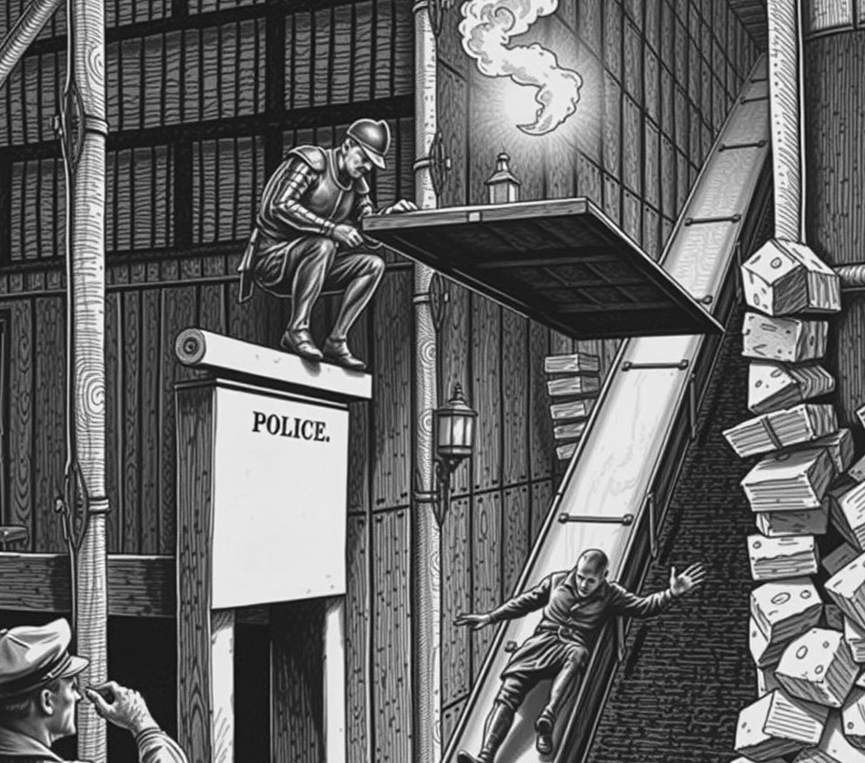

SPIRE-LONDON . 20 May 2833

Bram Thorne won the Spire-London Safe-Cracking Open yesterday after Tactical Squad 9 halted pursuit to complete a mandatory lantern-lighting ritual. Thorne cracked the Sky-Thames main vault in four minutes. He tripped the alarm on purpose to pull precinct officers onto the high girders.
Squad 9 cornered Thorne on the open gantry six hundred metres above the tide. They drew close. Then the city clocks struck dusk. Under the 1688 Watch Charter, all precinct officers must stop at sunset to trim and ignite three brass oil-lamps.
Commander Hana Osei ordered her squad to sheath their stun nets and open their brass lamp kits. Officer Dev Patel spent seven minutes striking a damp flint against steel. Thorne waited on the railing and ate an energy bar.
Thorne opened the inner vault door with a tension rod while Squad 9 hummed the evening watch hymn. He packed forty gold bars into a float-bag and dropped down the chute. Squad 9 lit the last lamp ten minutes later. They tagged the empty vault as secure and logged a clean patrol.
In the mixed zone, Thorne polished his trophy with a cloth.
"I respect civic duty," Thorne said. "If they ever switch to automated lamps, I will retire."